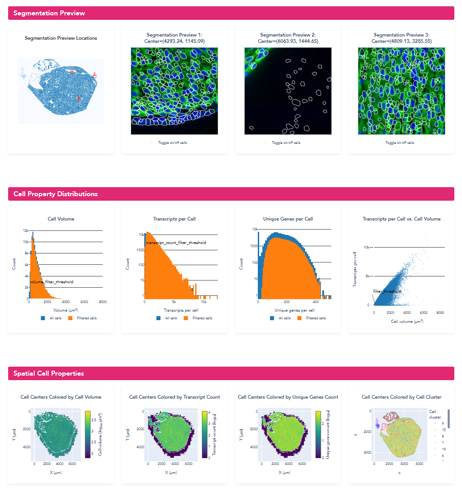
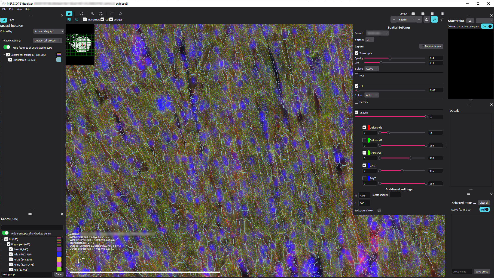

Example: Re-segmenting a MERSCOPE Heart Dataset with a Machine Learning Model Customized with Manual Annotations
Introduction
MERSCOPE maps the precise locations of hundreds of millions of transcripts from hundreds of genes across intact tissue slices using MERFISH technology. The high-resolution, highly multiplexed measurements enable mapping the cellular composition of tissues with fine cell-type resolution. This single-cell analysis is greatly facilitated by MERSCOPEs cell boundary stain and onboard cell segmentation algorithms that provide single-cell analysis results alongside the list of detected transcripts. However, cells in some tissues, such as multinucleated muscle tissues or tissues with abnormal cell shape may not be segmented well by the MERSCOPE onboard cell segmentation algorithms. For these tissues that are more challenging to segment, you can improve the segmentation results by hand annotating a small number of tiles, following the steps described in this workflow.
The workflow includes several steps – the first part consists of evaluating the initial segmentation to determine the need to improve the segmentation results. Next, identifying problematic regions using MERSCOPE Vizualizer and extracting corresponding image patches with the Vizgen Postprocessing Tool (VPT). Then, loading the image patches into Cellpose 2 (Pachitariu & Stringer, Nature Methods, 2022) and annotating the boundaries of the observed cells to retrain the Cellpose2 model. Lastly, using VPT to resegment the full dataset and evaluate the improved segmentation results. Here we show how the workflow can be applied to heart tissue to generate improved segmentation where the resegmented cells better visually match the cell boundary stain, have a much larger volume consistent with the larger volume of heart cells, and a substantially larger fraction of transcripts are assigned to a cell compared to the original cell segmentation results. The heart dataset used has an imaged area of 27.5 square millimeters and 205,596,450 transcripts.
{kind=link}
Workflow inputs
This workflow processes the output data from the MERSCOPE instrument. For a dataset named %EXPERIMENT_NAME%, the output data is found on the MERSCOPE instrument under z:\merfish_output\%EXPERIMENT_NAME%\%REGION_NAME%\. Within this directory, you can find the following files that are required as inputs for this workflow.
Input |
File Name |
Description |
|---|---|---|
Mosaic tiff images |
images/mosaic_{stain name}_z{z level}.tif |
Every image channel acquired during a MERFISH experiment that is not decoded as a MERFISH
bit, will be output as a mosaic tiff image in this folder. This includes DAPI, PolyT, Cellbound
stains (if applicable), and subsequent round stains (if applicable). The raw data images from
the MERFISH experiment are stitched together based on the alignment of fiducial beads to create
a mosaic that minimizes the appearance of seams between fields of view. The images themselves
are single channel, single plane, 16-bit grayscale tiff files, with the naming convention
mosaic_{stain name}_z{z level}.tif |
Micron to mosaic pixel transformation matrix |
micron_to_mosaic_pixel_transform.csv |
An affine transformation matrix describing translation and a scaling to convert from micron
units (used for transcirpt locations) to pixel units (of the mosaic images). This file helps convert
the coordinates of the pixels in the mosaic tiff images to real world micron coordinates.
|
List of detected transcripts |
detected_transcripts.csv |
The
detected_transcripts.csv file is a standard comma separated values (csv) formattedtext file that lists all of the transcripts detected in the MERSCOPE run, include the gene identity
of each transcripts and it’s x, y, and z location within the sample.
|
VZG file |
{experiment_name}_region_{region_index}.vzg |
The VZG file contains a representation of the dataset that can be opened with the
MERSCOPE Vizualizer. It contains all the information needed to interactively visualize
the transcript locations, cell boundaries, and a compressed version of the mosaic image
channels (e.g. DAPI, PolyT, Cellbound stains).
|
Workflow Summary (6 hours 30 minutes)
Note
We ran the VPT re-segmentation on a more powerful computer than we used for the rest of the workflow. We utilized a compute instance with 32 cores and 256GB of RAM. The rest of the steps were completed on a machine with 4 cores and 16GB of RAM.
Step |
Summary |
Time Estimate (for heart dataset) |
|---|---|---|
System setup |
Identify the location of the required input files. Install MERSCOPE Vizualizer, Vizgen
Postprocessing Tool (VPT), and Cellpose 2.
|
15 minutes |
Evaluate baseline segmentation |
Load the VZG file for the dataset into the MERSCOPE Vizualizer and evaluate the initial
segmentation results.
|
15 minutes |
Identify regions to target for segmentation model retraining
and extract image patches
|
Identify regions that need improved segmentation using MERSCOPE Vizualizer. Extract
corresponding image patches from the mosaic tiff images using VPT. For this example we
extracted 20 patches, each 108 x 108 um.
|
30 minutes |
Annotate cell boundaries on extracted image patches |
Load the extracted patches into the Cellpose UI and use the Cellpose tools to annotate the
boundaries on each image.
|
3 hours, 30 minutes |
Retrain the machine learning model using the annotations |
Use the Cellpose UI to retrain the base model using the manual annotations. Here we
retrained with 100 epochs.
|
30 minutes |
Re-segment the full MERSCOPE dataset using the
retrained model
|
Use VPT to re-segment the full dataset, generating a new VZG file, cell metadata, and
cell by gene matrix with the new segmentation results.
|
1 hour |
Evaluate the new segmentation |
Load the new VZG file into MERSCOPE Vizualizer to qualitatively examine the new
segmentation and use VPT to generate a quantitative segmentation report.
|
30 minutes |
System Setup
Requirements Summary
Computer:
Windows or MacOS (at least Yosemite) (Windows 10 used here with VPT running in WSL)
> 16 GB RAM recommended (16GB used here)
i7-1185G used here
Software:
MERSCOPE Vizualizer
Python >=3.9 and <3.11 with virtual environments configured for:
vpt >= 1.2.0cellpose >= 2.0.0
MERSCOPE Vizualizer
The MERSCOPE Vizualizer is a software tool for interactively exploring MERSCOPE output data and is available to any MERSCOPE user. MacOS and Windows versions can be downloaded from here.
Python
VPT and Cellpose2 are Python libraries and require a version of Python between 3.9 and 3.11 to be installed. Python can be downloaded from Download Python. Once python is installed, pip and venv modules should be installed before proceeding to installing VPT and Cellpose2.
VPT (with cellpose2 plugin)
Vizgen postprocessing tool (VPT) is a command line tool that facilitates re-segmenting full MERSOCPE output datasets with
customized segmentation parameters. To install VPT, follow the instructions at Installation. This workflow requires
vpt >= 1.2.0. If you don’t have the latest version if VPT, it should be upgraded to the latest version using the command:
pip install --upgrade vpt
The Cellpose2 plugin is available as a Python package and can be installed using pip:
pip install vpt-plugin-cellpose2
Note
For the plugin to be recognized, it must be installed in the same environment as VPT
Cellpose2
Cellpose2 is widely used segmentation tool created by Professor Carsen Stringer’s lab. Cellpose2 contains tools for interactively annotating images and retraining the base Cellpose2 models. For additional resources, please visit PyPi or the cellpose installation page. To prepare cellpose2 for this workflow:
Create a virtual environment and activate it
Install
cellpose >= 2.0.0with the GUI into the virtual environment
User Input
user@computer:~$ python3 -m venv ~/.venv/cellpose2
user@computer:~$ source .venv/cellpose2/bin/activate
(cellpose2) user@computer:~$ pip install cellpose[gui]
Console Output
[ pip installation progress trimmed for brevity ]
Successfully installed MarkupSafe-2.1.3 PyQt6-Qt6-6.6.1 cachetools-5.3.2 cellpose-2.2.3 certifi-2023.11.17 charset-normalizer-3.3.2 colorama-0.4.6 fastremap-1.14.0 filelock-3.13.1 fsspec-2023.12.2 google-api-core-2.15.0 google-auth-2.25.2 google-cloud-core-2.4.1 google-cloud-storage-2.14.0 google-crc32c-1.5.0 google-resumable-media-2.7.0 googleapis-common-protos-1.62.0 idna-3.6 imagecodecs-2023.9.18 jinja2-3.1.2 llvmlite-0.41.1 mpmath-1.3.0 natsort-8.4.0 networkx-3.2.1 numba-0.58.1 numpy-1.26.2 opencv-python-headless-4.8.1.78 packaging-23.2 protobuf-4.25.1 pyasn1-0.5.1 pyasn1-modules-0.3.0 pygments-2.17.2 pyqt6-6.6.1 pyqt6.sip-13.6.0 pyqtgraph-0.13.3 qtpy-2.4.1 requests-2.31.0 roifile-2023.8.30 rsa-4.9 scipy-1.11.4 superqt-0.6.1 sympy-1.12 tifffile-2023.12.9 torch-2.1.2 tqdm-4.66.1 typing-extensions-4.9.0 urllib3-2.1.0
We recommend confirming that Cellpose has been installed properly and that the Cellpose2 UI can be opened using the command:
(cellpose2) user@computer:~$ python -m cellpose
Step 1: Evaluate Baseline Segmentation
To evaluate whether the segmentation may benefit from a machine learning model retrained with manual annotations, we begin by qualitatively and quantitatively evaluating the out-of-the-box segmentation. We find that retraining the machine learning model can substantially improve the cell segmentation on samples if either cells visually present in the DAPI or cell boundary stain images but not detected in the out-of-the-box segmentation or the cells have atypical cell morphology that is not well traced by the out of the box segmentation.
Qualitative segmentation evaluation with MERSCOPE Vizualizer
To qualitatively explore the initial segmentation results, we loaded the VZG file from the mouse heart experiment into the MERSCOPE Vizualizer software and examined the segmentation boundaries overlaid on the detected transcripts and the DAPI and cellpoa portion o. In the image below, we overlay the cell boundaries on top of the mosaic. The DAPI is colored blue, the cell boundary stain is colored green, the transcripts are overlaid as points, and the segmented cell boundaries are shown as cyan lines. Immediately, it can be seen that the geometries do not closely follow the clear cell boundaries and many transcripts fall outside of the cell boundaries.
{kind=link}
Quantitative segmentation evaluation with MERSCOPE segmentation summary report
To MERSCOPE run summary report contains a segmentation summary that can facilitate quantitative evaluation of the segmentation
quality. For experiments ran prior to MERSCOPE instrument control software version 234, the segmentation summary can be
generated using the VPT command, generate-segmentation-metrics. For more information about the options and arguments that
may be passed to generate-segmentation-metrics, please see the Command Line Interface section of the user guide.
An example of the segmentation report for the mouse heart dataset is shown below. From this segmentation summary, both the tissue area covered by cells and transcripts within a cell appear low (38% and 64% respectively), consistent with the qualitative evaluation using the MERSCOPE Vizualizer.
{kind=link}
{kind=link}
{kind=link}
Step 2: Identify Regions to Target for Segmentation Model Retraining and Extract Image Patches
To retrain the machine learning model to achieve improved cell segmentation results, we first have to identify regions of the tissue to extract images to manually annotate. Since MERSCOPE Vizualizer enables interactively exploring a MERSCOPE output dataset, it is an ideal tool for identify regions of interest across the sample. To identify regions of the heart to extract for manual annotation, we opened the MERSCOPE Vizualizer, loaded the VZG file for the experiment, and identified regions where the segmentation boundaries did not match the expectations based on the DAPI and cell boundary stain images. If there are diverse cell morphologies across different regions of the tissue, we recommend extracting a diversity of regions covering the diversity of cell morphologies to avoid over-optimizing the model against a subset of the tissue.
Once a region is identified, the following steps allow you to extract the corresponding image patch that can be loaded into Cellpose2.
Select the “Toggle info panel” button in the top left corner of the window (highlighted in red below).
Zoom in to the area of interest and use the “Window center (um)” or use the live cursor coordinates named “Cursor position (um)” from the info panel in the bottom left corner of the window (highlighted in red below) to find the (x, y) coordinate in micron space of the patch center you want to extract.

Record the (x,y) center coordinates of the selected region (center_x=4316.0, center_y=2512.0 here).
Use VPT to extract the corresponding patch from the mosaic images using the
extract-image-patchcommand. For more information about the options and arguments that may be passed toextract-image-patch, please see the Command Line Interface section of the user guide. This generates an RGB PNG image patch wherever you have specified the output.To minimize file transfer later on in the workflow, we recommend saving all output PNGs to the same folder.
Note for this example heart dataset, the MERSCOPE Cell Boundary Stain was used and the Cellbound1 and Cellbound3 images were included in the output patch. For experiments where the MERSCOPE Cell Boundary Stain wasn’t used, DAPI and PolyT stains are still available for segmentation.
Repeat steps 2 through 4 for each of the regions selected for manual annotation.
User Input
(vpt_env) user@computer:~$ vpt --verbose --log-level 1 extract-image-patch \
> --input-images MsHeart/region_0/images/ \
> --input-micron-to-mosaic MsHeart/region_0/images/micron_to_mosaic_pixel_transform.csv \
> --output-patch analysis_outputs/patch_4316_2512.png \
> --center-x 4316.0 \
> --center-y 2512.0 \
> --size-x 108 \
> --size-y 108 \
> --input-z-index 3 \
> --red-stain-name Cellbound1 \
> --green-stain-name Cellbound3 \
> --blue-stain-name DAPI \
> --normalization CLAHE
Console Output
2023-12-06 16:53:22,352 - . - INFO - run extract-image-patch with args:Namespace(input_images='MsHeart/region_0/images/', input_micron_to_mosaic='MsHeart/region_0/images/micron_to_mosaic_pixel_transform.csv', output_patch='analysis_outputs/patch_4316_2512.png', center_x=4316.0, center_y=2512.0, size_x=108.0, size_y=108.0, input_z_index=3, red_stain_name='Cellbound2', green_stain_name='Cellbound3', blue_stain_name='DAPI', normalization='CLAHE', overwrite=False)
2023-12-06 16:53:23,500 - . - INFO - extract image patch started
2023-12-06 16:54:38,346 - . - INFO - extract image patch finished
An example of an output RGB PNG is shown below:

Step3: Annotate Cell Boundaries on Extracted Image Patches
Retraining the machine learning model requires manually indicating the ideal location of the cell boundaries within each of the selected image patches. This is achieved by loading the image patches into the Cellpose2 UI and using the Cellpose2 tools to indicate the ideal cell boundaries. To do this, follow these steps:
Activate the cellpose 2.0 environment created during setup
user@computer:~$ source .venv/cellpose2/bin/activate
Launch the Cellpose UI (the UI should immediately pop up):
User Input
(cellpose2) user@computer:~$ python -m cellpose
Console Output
2023-12-21 15:57:00,717 [INFO] WRITING LOG OUTPUT TO user\.cellpose\run.log
2023-12-21 15:57:00,717 [INFO]
cellpose version: 2.2.3
platform: win32
python version: 3.9.13
torch version: 2.0.0+cpu
2023-12-21 15:57:01,681 [INFO] TORCH CUDA version not installed/working.

Load the PNG image that was saved in the previous step via File → Load image (*.tif, *.png, *.jpg).

Modify the segmentation parameters on the left panel and select the desired segmentation channels.
The cyto2 model we used here accepts a channel to segment and an optional nuclear channel. Here we selected channel 0 as “chan to segment” and channel 3 as “chan2 (optional).”
A more detailed description of each parameter can be found in the Cellpose API .
To facilitate the hand annotation, we first ran a baseline segmentation model on the image patch to generate preliminary cell boundaries to manually adjust by hand. The baseline model can either be one from the Cellpose2 “model zoo” or a previously trained custom model.
We suggest evaluating the models in the model zoo to determine which gives the best baseline segmentation. The best baseline segmentation will both require the fewest manual edits and likely be the best base model to use for the following retraining step.
Modify the baseline segmentation masks by following the instructions in the Cellpose2 instruction video: Cellpose2: human-in-the-loop model training (2x speed).
After any modification, a save via File → Save masks and image (as *_seg.npy) OR Ctrl+S will save the new annotation NPY file in the current working directory with the same name as the image with a “_seg.npy” tagged on the end.
{kind=link}
Step 4: Retrain the Machine Learning Model Using the Annotations
Once the manual annotations are created, Cellpose2 facilitates retraining the base model with the new annotations. To train on the series of ROI images that were just annotated, ensure all PNG images and associated NPY files are in a common folder and ensure that folder is set as the current working directory (can be seen at the top of the cellpose2 GUI). Once all manual annotations are completed, we retrained the model following the steps below:
In the menu bar along the top of the window, select Models → Train new model with images+masks in folder
Enter the name of the new model, the base model the new model should be derived from, and the training parameters and run the model.
The model to be trained on top of is the model whose weights you wish to adjust. We recommend using the built-in cellpose model that was just used to generate the baseline for the manual adjustments. If no built-in model provided reasonable baseline segmentation, you may wish instead to train a model from scratch by selecting “scratch”.
Model training parameters
Learning Rate: The size of the steps taken during gradient descent (used to scale the magnitude of parameter updates). A higher rate can speed up learning, but risks not minimizing the loss function, while a lower rate may lead to slow convergence.
Weight Decay: A regularization technique that penalizes large weights in the model. This can help to prevent overfitting by discouraging overly complex models.
Number of Epochs: The number the total passes through the training data. Here we used 100 epochs.
The model will get saved to the \models folder in the current working directory and/or wherever you installed cellpose and specified the model locations (typically a \.cellpose\models\ folder in the \Users directory).
To evaluate the new model, import an image patch, modify the segmentation parameters to match the settings used for training, and select the custom model in the “custom models” section. Select “run model” as highlighted in red in the image below and examine the results of the model on your image.
If the results of the retrained model do not closely meet your expectations, we recommend either including additional image patches, adjusting the segmentation parameters, or changing the base model.

Step 5: Re-segment Full MERSCOPE Dataset Using Retrained Model
Once the refined Cellpose2 model was created using the manual annotations, we need to run the retrained model across the full MERSCOPE dataset to regenerate the cell by gene matrix to use for downstream single cell analysis. To do this processing, we use VPT to resegment the original images using the newly trained model.
The segmentation algorithm for VPT is specified through an algorithm JSON file. Example algorithm JSON files for Cellpose2 can be found in the “example_analysis_algorithm” folder within the vpt-plugin-cellpose2 repository: https://github.com/Vizgen/vpt-plugin-cellpose2/tree/develop/example_analysis_algorithm. These can be used as a template for customizing to match the parameters specified within the Cellpose2 UI.
Files with “custom” are examples using customs models and not built-in models.
Files with “2task” are examples uisng multiple segmentation tasks whose results get harmonized. Typically one task segments the cell boundaries and the other segments nuclei.
In the algorithm JSON file, there are some fields that need to be updated. This includes the path to the newly saved custom model and the channel colors to the proper stain in the “segmentation_properties” section:
"segmentation_properties": {
"model": null,
"model_dimensions": "2D",
"custom_weights": "CP_20230830_093420",
"channel_map": {
"red": "Cellbound1",
"green": "Cellbound3",
"blue": "DAPI"
}
},
and the channel names, cell diameter, and thresholds in the “segmentation_parameters” section:
"segmentation_parameters": {
"nuclear_channel": "DAPI",
"entity_fill_channel": "all",
"diameter": 137.76,
"flow_threshold": 0.95,
"cellprob_threshold": -5.5,
"minimum_mask_size": 500
},
To achieve equivalent results to what was observed earlier in the Cellpose2 UI, the diameter parameter should be set equal to the expected one from the cellpose2 GUI. To get this value, load the newly trained model in the “custom models” section and read the value filled in the “cell diameter” field, as indicated in the image below:
{kind=link}
With the segmentation parameter file configured, we used VPTs run-segmentation command to run the new model at scale by utilizing the cellpose2 plugin. This generates a new parquet file with the segmentation boundaries determined using the newly trained model across the full dataset. Note that we ran the VPT re-segmentation on a more powerful computer than we used for the rest of the workflow. We utilized a compute instance with 32 cores and 256GB of RAM.
User Input
(vpt_env) user@computer:~$ vpt --verbose --processes 32 run-segmentation \
> --segmentation-algorithm example_analysis_algorithm/cellpose2_custom_2task.json \
> --input-images="MsHeart/region_0/images/mosaic_(?P<stain>[\w|-]+)_z(?P<z>[0-9]+).tif" \
> --input-micron-to-mosaic MsHeart/region_0/images/micron_to_mosaic_pixel_transform.csv \
> --output-path analysis_outputs \
> --tile-size 2400 \
> --tile-overlap 200
Console Output
2024-01-03 16:45:11,103 - . - INFO - run run-segmentation with args:Namespace(segmentation_algorithm='202305010900_U2OS_small_set_VMSC00000/region_0/cellpose2_2task_optimized.json', input_images='202305010900_U2OS_small_set_VMSC00000/region_0/images/mosaic_(?P<stain>[\\w|-]+[0-9]?)_z(?P<z>[0-9]+).tif', input_micron_to_mosaic='202305010900_U2OS_small_set_VMSC00000/region_0/images/micron_to_mosaic_pixel_transform.csv', output_path='202305010900_U2OS_small_set_VMSC00000/cellpose2/', tile_size=1000, tile_overlap=200, max_row_group_size=17500, overwrite=True)
2024-01-03 16:45:11,600 - . - INFO - run_segmentation started
2024-01-03 16:45:11,797 - . - INFO - prepare segmentation started
2024-01-03 16:46:08,556 - . - INFO - prepare segmentation finished
2024-01-03 16:46:16,445 - ./task-368 - INFO - Run segmentation on tile 368 started
2024-01-03 16:46:16,477 - ./task-344 - INFO - Run segmentation on tile 344 started
2024-01-03 16:46:16,497 - ./task-396 - INFO - Run segmentation on tile 396 started
2024-01-03 16:46:16,497 - ./task-364 - INFO - Run segmentation on tile 364 started
2024-01-03 16:46:16,517 - ./task-380 - INFO - Run segmentation on tile 380 started
2024-01-03 16:46:16,517 - ./task-376 - INFO - Run segmentation on tile 376 started
2024-01-03 16:46:16,547 - ./task-308 - INFO - Run segmentation on tile 308 started
2024-01-03 16:46:16,547 - ./task-284 - INFO - Run segmentation on tile 284 started
2024-01-03 16:46:16,547 - ./task-312 - INFO - Run segmentation on tile 312 started
2024-01-03 16:46:16,547 - ./task-372 - INFO - Run segmentation on tile 372 started
2024-01-03 16:46:16,547 - ./task-360 - INFO - Run segmentation on tile 360 started
2024-01-03 16:46:16,547 - ./task-316 - INFO - Run segmentation on tile 316 started
2024-01-03 16:46:16,579 - ./task-300 - INFO - Run segmentation on tile 300 started
.
.
.
[ run-segmentation progress trimmed ]
.
.
.
2024-01-03 16:46:17,099 - ./task-376 - INFO - Tile 376 [22400, 11200, 1600, 1600]
2024-01-03 16:46:17,172 - ./task-368 - INFO - Tile 368 [11200, 11200, 1600, 1600]
2024-01-03 16:46:17,172 - ./task-284 - INFO - Tile 284 [19600, 8400, 1600, 1600]
2024-01-03 16:46:17,180 - ./task-308 - INFO - Tile 308 [53200, 8400, 1600, 1600]
2024-01-03 16:46:17,180 - ./task-312 - INFO - Tile 312 [58800, 8400, 1600, 1600]
2024-01-03 16:46:17,202 - ./task-372 - INFO - Tile 372 [16800, 11200, 1600, 1600]
2024-01-03 16:46:17,221 - ./task-316 - INFO - Tile 316 [1400, 9800, 1600, 1600]
2024-01-03 16:46:17,240 - ./task-344 - INFO - Tile 344 [40600, 9800, 1600, 1600]
2024-01-03 16:46:17,240 - ./task-364 - INFO - Tile 364 [5600, 11200, 1600, 1600]
2024-01-03 16:46:17,261 - ./task-300 - INFO - Tile 300 [42000, 8400, 1600, 1600]
.
.
.
[ run-segmentation progress trimmed ]
.
.
.
2024-01-03 16:48:21,020 - ./task-344 - INFO - generate_polygons_from_mask
2024-01-03 16:48:21,100 - ./task-344 - INFO - get_polygons_from_mask: z=0, labels:96
2024-01-03 16:48:21,171 - ./task-300 - INFO - generate_polygons_from_mask
2024-01-03 16:48:21,232 - ./task-300 - INFO - get_polygons_from_mask: z=0, labels:133
2024-01-03 16:48:21,294 - ./task-380 - INFO - generate_polygons_from_mask
2024-01-03 16:48:21,371 - ./task-380 - INFO - get_polygons_from_mask: z=0, labels:110
2024-01-03 16:48:21,404 - ./task-384 - INFO - generate_polygons_from_mask
2024-01-03 16:48:21,481 - ./task-384 - INFO - get_polygons_from_mask: z=0, labels:110
2024-01-03 16:48:21,549 - ./task-392 - INFO - generate_polygons_from_mask
2024-01-03 16:48:21,626 - ./task-336 - INFO - generate_polygons_from_mask
2024-01-03 16:48:21,637 - ./task-392 - INFO - get_polygons_from_mask: z=0, labels:127
2024-01-03 16:48:21,704 - ./task-336 - INFO - get_polygons_from_mask: z=0, labels:94
2024-01-03 16:48:22,262 - ./task-364 - INFO - raw segmentation result contains 36 rows
2024-01-03 16:48:22,263 - ./task-364 - INFO - fuze across z
2024-01-03 16:48:22,408 - ./task-372 - INFO - generate_polygons_from_mask
2024-01-03 16:48:22,410 - ./task-364 - INFO - remove edge polys
2024-01-03 16:48:22,486 - ./task-372 - INFO - get_polygons_from_mask: z=0, labels:90
2024-01-03 16:48:23,529 - ./task-284 - INFO - raw segmentation result contains 84 rows
2024-01-03 16:48:23,529 - ./task-284 - INFO - fuze across z
2024-01-03 16:48:23,716 - ./task-284 - INFO - remove edge polys
2024-01-03 16:48:25,166 - ./task-344 - INFO - raw segmentation result contains 94 rows
2024-01-03 16:48:25,166 - ./task-344 - INFO - fuze across z
.
.
.
[ run-segmentation progress trimmed ]
.
.
.
2024-01-03 17:23:19,716 - . - INFO - After both resolution steps, found 0 uncaught overlaps
2024-01-03 17:23:49,330 - . - INFO - Resolved overlapping in the compiled dataframe
2024-01-03 17:23:56,102 - . - INFO - Saved compiled dataframe for entity cell in micron space
2024-01-03 17:24:14,568 - . - INFO - Saved compiled dataframe for entity cell in mosaic space
2024-01-03 17:24:14,569 - . - INFO - Compile tile segmentation finished
2024-01-03 17:24:15,509 - . - INFO - run_segmentation finished
Along with the cell boundaries, we also regenerated the cell by gene matrix (the number of times a transcript from each of the targetted genes appears within each of the segmented cell boundaries), the cell metadata (containing coordinates, volume, and transcript counts for each cell), and updated the vzg file to include the new segmentation boundaries using the following commands in VPT:
User Input
(vpt_env) user@computer:~$ vpt --verbose partition-transcripts \
> --input-boundaries analysis_outputs/cellpose2_micron_space.parquet \
> --input-transcripts MsHeart/region_0/detected_transcripts.csv \
> --output-entity-by-gene analysis_outputs/cell_by_gene.csv
Console Output
2023-12-22 18:12:22,915 - . - INFO - run partition-transcripts with args:Namespace(input_boundaries='analysis_outputs/cellpose2_micron_space.parque', input_transcripts='MsHeart/region_0/detected_transcripts.csv', output_entity_by_gene='analysis_outputs/cell_by_gene.csv', chunk_size=10000000, output_transcripts=None, overwrite=False)
2023-12-22 18:12:23,023 - . - INFO - Partition transcripts started
2023-12-22 19:36:15,115 - . - INFO - cell by gene matrix saved as analysis_outputs/cell_by_gene.csv
2023-12-22 19:36:15,115 - . - INFO - Partition transcripts finished
User Input
(vpt_env) user@computer:~$ vpt --verbose derive-entity-metadata \
> --input-boundaries analysis_outputs/cellpose2_micron_space.parquet \
> --output-metadata analysis_outputs/cell_metadata.csv
Console Output
2023-12-22 21:09:19,721 - . - INFO - run derive-entity-metadata with args:Namespace(input_boundaries='analysis_outputs/cellpose2_micron_space.parquet', output_metadata='analysis_outputs/cell_metadata.csv', input_entity_by_gene=None, overwrite=False)
2023-12-22 21:09:19,828 - . - INFO - Derive cell metadata started
2023-12-22 21:12:58,070 - . - INFO - Derive cell metadata finished
User Input
(vpt_env) user@computer:~$ vpt --verbose --processes 8 update-vzg \
> --input-vzg MsHeart/region_0/MsHeart_region_0.vzg \
> --input-boundaries analysis_outputs/cellpose2_micron_space.parquet \
> --input-entity-by-gene analysis_outputs/cell_by_gene.csv \
> --output-vzg analysis_outputs/MsHeart_region_0_cellpose2.vzg
Console Output
2024-01-04 15:53:07,072 - . - INFO - run update-vzg with args:Namespace(input_vzg='MsHeart/region_0/MsHeart_region_0.vzg', input_boundaries='analysis_outputs/cellpose2_micron_space.parquet', input_entity_by_gene='analysis_outputs/cell_by_gene.csv', output_vzg='analysis_outputs/MsHeart_region_0_cellpose2.vzg', input_metadata=None, input_entity_type=None, overwrite=False)
2024-01-04 15:53:07,162 - . - INFO - Unpacking vzg file
2024-01-04 15:54:22,797 - . - INFO - MsHeart/region_0/MsHeart_region_0.vzg unpacked!
2024-01-04 15:54:22,800 - . - INFO - Dataset folder: vzg_build_temp/vzg_2024-01-04T15_53_07_162250/MsHeart_region_0
2024-01-04 15:54:22,800 - . - INFO - Number of input genes: 635
2024-01-04 15:54:27,800 - . - INFO - There is no cell metadata on input, start creating
2024-01-04 15:55:56,412 - . - INFO - Cell metadata file created
2024-01-04 15:55:57,133 - . - INFO - Running cell assembly in 8 processes for feature cell
2024-01-04 15:55:59,528 - ./task-0 - INFO - running cells processing for fovs
2024-01-04 15:55:59,528 - ./task-5 - INFO - running cells processing for fovs
2024-01-04 15:55:59,529 - ./task-7 - INFO - running cells processing for fovs
2024-01-04 15:55:59,529 - ./task-1 - INFO - running cells processing for fovs
2024-01-04 15:55:59,529 - ./task-3 - INFO - running cells processing for fovs
2024-01-04 15:55:59,531 - ./task-4 - INFO - running cells processing for fovs
2024-01-04 15:55:59,546 - ./task-6 - INFO - running cells processing for fovs
2024-01-04 15:55:59,548 - ./task-2 - INFO - running cells processing for fovs
2024-01-04 16:03:13,625 - ./task-6 - INFO - Done fov 6
2024-01-04 16:04:03,978 - ./task-0 - INFO - Done fov 0
2024-01-04 16:05:21,948 - ./task-2 - INFO - Done fov 2
2024-01-04 16:05:25,018 - ./task-3 - INFO - Done fov 3
2024-01-04 16:05:26,003 - ./task-1 - INFO - Done fov 1
2024-01-04 16:05:44,222 - ./task-4 - INFO - Done fov 4
2024-01-04 16:05:48,758 - ./task-5 - INFO - Done fov 5
2024-01-04 16:06:20,875 - . - INFO - Cells binaries generation completed for feature cell
2024-01-04 16:06:24,141 - . - INFO - Start calculating expression matrices
2024-01-04 16:07:52,520 - . - INFO - Start calculating coloring arrays
2024-01-04 16:07:54,998 - . - INFO - Finish calculating
2024-01-04 16:07:55,047 - . - INFO - Assembler data binaries generation complected for feature cell
2024-01-04 16:12:29,691 - . - INFO - new vzg file created
2024-01-04 16:12:30,654 - . - INFO - temp files deleted
2024-01-04 16:12:30,654 - . - INFO - Update VZG completed
Step 6: Evaluate New Segmentation
With the newly generated segmentation, we next evaluated the performance improvement from the re-annotated dataset, both qualitatively and quantitatively as we did with the original segmentation results.
For qualitative evaluation, we loaded the newly generated VZG file into the MERSCOPE Vizualizer software and examined the segmentation boundaries overlaid on the transcripts and images. With the retrained model, we can see that the segmented cells much more closely follow the elongated shape expected for the muscle cells in this region of the heart.
{kind=link}
With VPT, we also regenerated the segmentation summary using generate-segmentation-metrics directly to generate a new quantitative report and metrics csv file for the full-scale segmentation run. This command requires the detected_transcripts.csv as well as the cell_by_gene.csv, and cell_metadata.csv, generated from the previous VPT commands.
User Input
(vpt_env) user@computer:~$ vpt --verbose generate-segmentation-metrics \
> --input-entity-by-gene analysis_outputs/cell_by_gene.csv \
> --input-metadata analysis_outputs/cell_metadata.csv \
> --input-transcripts MsHeart/region_0/detected_transcripts.csv \
> --output-csv analysis_outputs/segmentation_metrics.csv \
> --experiment-name MsHeart_cellpose2 \
> --output-report analysis_outputs/segmentation_report.html \
> --output-clustering analysis_outputs/ \
> --input-images MsHeart/region_0/images/ \
> --input-boundaries MsHeart/cellpose2_micron_space.parquet \
> --input-micron-to-mosaic MsHeart/region_0/images/micron_to_mosaic_pixel_transform.csv \
> --input-z-index 0 \
> --red-stain-name Cellbound1 \
> --green-stain-name Cellbound3 \
> --blue-stain-name DAPI \
> --normalization CLAHE \
> --transcript-count-filter-threshold 100 \
> --volume-filter-threshold 200 \
Console Output
2023-12-06 12:10:32,525 - . - INFO - run generate-segmentation-metrics with args:Namespace(input_entity_by_gene='analysis_outputs/cell_by_gene.csv', input_metadata='analysis_outputs/cell_metadata.csv', input_transcripts='MsHeart/region_0/detected_transcripts.csv', output_csv='analysis_outputs/segmentation_metrics.csv', experiment_name='MsHeart_cellpose2', output_report='analysis_outputs/segmentation_report.html', output_clustering='analysis_outputs/', input_images='MsHeart/region_0/images/', input_boundaries='MsHeart/cellpose2_micron_space.parquet', input_micron_to_mosaic='MsHeart/region_0/images/micron_to_mosaic_pixel_transform.csv', input_z_index=0, red_stain_name='Cellbound1', green_stain_name='Cellbound3', blue_stain_name='DAPI', normalization='CLAHE', transcript_count_filter_threshold=100, volume_filter_threshold=200, overwrite=False)
2023-12-06 12:10:51,642 - . - INFO - Generate segmentation metrics started
2023-12-06 12:10:53,518 - . - INFO - Cell clustering started
2023-12-06 12:11:17,369 - . - INFO - Cell clustering finished
2023-12-06 12:11:17,370 - . - INFO - Making html report started
2023-12-06 12:12:02,489 - . - INFO - Making html report finished
2023-12-06 12:12:02,499 - . - INFO - Generate segmentation metrics finished
Opening of the summary html (shown below), the metrics and distributions can be directly compared to the previous segmentation. From the new summary report, we can see that for this example heart dataset, the retrained model significantly improved the cell segmentation metrics: cell size increased from 730.3 um^3 to 1423.3 um^3, transcripts per cell increased from 891 to 1514, and the percent of transcripts found within a segmented cell increased from 64.1% to 78.6%. For this sample with atypical cell morphology, manually annotating a few small regions and retraining the machine-learning model yielded significantly improved single-cell quantification for downstream biological analysis.
{kind=link}